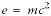

| DocBook: The Definitive Guide Version 0.0.1 (Alpha) |
| | DocBook: The Definitive Guide Version 0.0.1 (Alpha) |
$Revision: 1.1 $
$Date: 2005/07/03 00:15:36 $
inlinemediaobject — An inline media object (video, audio, image, and so on)
inlinemediaobject ::= (objectinfo?, (videoobject|audioobject|imageobject), (videoobject|audioobject|imageobject|textobject)*)
Common attributes
InlineMediaObject contains a set of alternative “graphical objects.” In DocBook V3.1, three types of external graphical objects are defined: VideoObjects, AudioObjects, and ImageObjects. Additional textual descriptions may be provided with TextObjects.
Formatted inline.
The primary purpose of the InlineMediaObject is to provide a wrapper around a set of alternative presentations of the same information.
If possible, the processing system should use the content of the first object within the InlineMediaObject. If the first object cannot be used, the remaining objects should be considered in the order that they occur. A processor should use the first object that it can, although it is free to choose any of the remaining objects if the primary one cannot be used.
Under no circumstances should more than one object in an InlineMediaObject be used or presented at the same time.
For example, an InlineMediaObject might contain a high resolution image, a low resolution image, and a text description. For print publishing, the high resolution image is used; for online systems, either the high or low resolution image is used, possibly including the text description as an online alternative. In a text-only environment, the text description is used.
These elements contain inlinemediaobject: abbrev, acronym, attribution, authorinitials, bibliomisc, citetitle, command, computeroutput, corpauthor, date, edition, email, emphasis, entry, filename, firstname, holder, honorific, issuenum, jobtitle, lineage, lineannotation, link, literal, literallayout, option, orgname, othername, para, phrase, programlisting, pubdate, publishername, quote, releaseinfo, replaceable, revnumber, revremark, subtitle, surname, systemitem, term, title, titleabbrev, trademark, ulink, userinput, volumenum, year.
The following elements occur in inlinemediaobject: audioobject, imageobject, objectinfo, textobject, videoobject.
audioobject, caption, imageobject, mediaobject, textobject, videoobject.
In the following example, the InlineEquation uses InlineMediaObject to provide to alternate renderings for the equation. One is a graphic, the other is a text representation.
For display purposes, both in print and in the online presentation, the graphic is selected. If you were generating content for some other medium, a text only browser or a cell phone, for example, only the text representation might be selected.
<!DOCTYPE para PUBLIC "-//OASIS//DTD DocBook XML V4.1.2//EN"
"http://www.oasis-open.org/docbook/xml/4.1.2/docbookx.dtd">
<para>
Einstein's most famous equation,
<inlineequation>
<inlinemediaobject>
<imageobject>
<imagedata fileref="figures/emc2.png"/>
</imageobject>
<textobject>
<phrase>E=mc<superscript>2</superscript></phrase>
</textobject>
</inlinemediaobject>
</inlineequation>, expresses the relationship between matter
and energy.
</para>Einstein's most famous equation, , expresses the relationship between matter and energy.